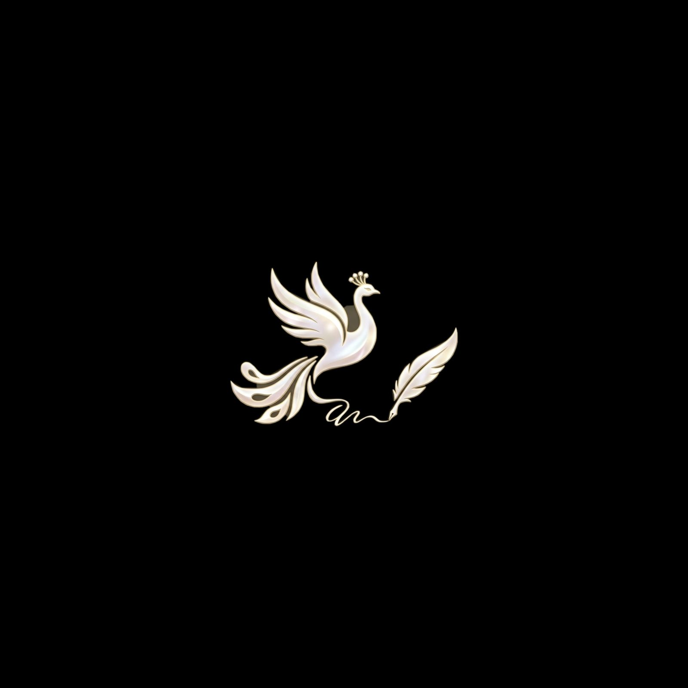

Сөз МаржаныӨткеннің аманаты — бүгіннің қазынасы
"Қайғы басқан кісіге,мамық төсек таспен тең
Қайғысы жоқ кісіге,екі аяғы атпен тең."
"Қайғы басқан кісіге мамық төсек таспен тең": Адамның жаны жаралы болса, жүрегі қайғыға толса, оған қандай жайлылық болса да, бәрібір. Ол ештеңеден ләззат алмайды, дүние оған суық, тар, ауыр көрінеді. "Қайғысы жоқ кісіге екі аяғы атпен тең": Көңілі жай, уайымсыз адам бақытты. Оған ештеңе жетіспейді, екі аяғымен жаяу жүрсе де, ат мінгендей жеңіл, шат-шадыман өмір сүреді. Оның қанағатшылдығы мен қуанышы ешқандай байлықпен өлшенбейді.
"Көп асқанға бір тосқан"
Мақал үлкен жетістіктер мен биіктерге жеткенде, кедергілер мен қиындықтардың болатынын және оларға дайын болу керектігін ескертеді.Бұл қиындықтардан сабақ алып, шыдамдылық пен табандылық таныту маңызды екенін білдіреді.
"Ердің құны — жүз жылқы, ары — мың жылқы"
Негізгі мағынасы Бұл мақал ер азаматтың ең қымбат қасиеті — ар-намысы екенін айтады. Тура мағынасында «ердің құны» малмен өлшенетіндей берілгенімен, астарында адамның қадірі мен намысы ешбір дүниемен толық бағаланбайтыны жатыр. Яғни жүз жылқы — үлкен байлық, ал мың жылқы — одан да мол дүние, бірақ ар бәрінен жоғары. Адам арын сақтаса, оның тұлғалық биігі де сақталады. Ардан айырылу — байлықтан, мансаптан, тіпті өмірдің сыртқы сәнінен де ауыр. Образдар мен теңеулер Мұндағы «жүз жылқы» мен «мың жылқы» — қазақ ұғымындағы аса зор байлықтың өлшемі. Жылқы көшпелі өмірде дәулеттің, беделдің, еркіндіктің белгісі болған. Ал «ердің құны» деген тіркес ер адамның қоғамдағы орнын, жауапкершілігін көрсетеді. «Ары» сөзінің мың жылқымен салыстырылуы ар-намыстың материалдық құндылықтан әлдеқайда биік екенін әсерлі жеткізеді. Қазіргі өмірде Қазір бұл мақал адамды әділ болуға, өтірікке бармауға, өз қадірін түсірмеуге үндейді. Мысалы, қызметте жоғарылау үшін біреу жалған сөйлеп, біреудің еңбегін иемденгісі келсе, арын сақтаған адам ондай жолға бармайды. Себебі уақытша пайдадан гөрі, таза абырой қымбат.
"Қисық ағаш қиыспайды, қыңыр кісі сыйыспайды"
"Ағаш" қазақ мәдениетінде табиғаттың бір бөлшегі ретінде жиі кездеседі және оның бейнесі көптеген ауыспалы мағынаға ие. "Қисық ағаш" тіркесі де сондай мағыналы. Қисық ағаш ауыспалы мағынада мінезі тік емес адамды, яғни тура, әділ емес, бірбеткейлігі жоқ, түрлі айла-шарғыға баратын адамды сипаттау үшін қолданылады. Мұнда "қисық" сөзі адамның мінезіндегі кемшіліктерді, тік жүрмеушілікті, қулық-сұмдықты білдіреді. Мысалы, бір адам жайында "Ол қисық ағаш қой" деп айтса, бұл оның әділетсіз немесе алдамшы екенін көрсету мақсатында айтылуы мүмкін. Қисық бұтақтар немесе ағаштар бір-біріне сәйкес келмейді, олардан түзу, сапалы зат жасау қиын,сол секілді мінезі қиқар, қырсық, сыйымсыз адамдармен жұмыс істесу, дос болу немесе ортақ тіл табысу қиын.
"Шағала келмей жаз болмас,
Шаңқан келмей боз болмас."
Негізгі мағынасы Бұл мақалдың тура мағынасы — шағала көрінбей жаз толық орнамайды, ал шаңқан түсі көрінбей боздың өңі айқындалмайды. Астарлы мағынасы — әр нәрсенің өз белгісі, өз мезгілі болады; бір құбылысты сол құбылыстың нышаны арқылы танимыз. Халық мұнда табиғаттағы заңдылықты өмір заңына айналдырып, кез келген істің басталуын білдіретін белгі болатынын меңзейді. Образдар мен теңеулер Мұндағы шағала — жаздың, жылылықтың, көктемнен кейінгі кең тыныстың белгісі. Ал шаңқан мен боз — ақ, ашық түсті реңктерді білдіріп, бір нәрсенің ажарын, айқын келбетін елестетеді. Яғни құбылыстың толық көрінуі үшін оның алдын ала байқалатын нышаны болуы керек деген ой берілген. Табиғат суреті арқылы өмірдегі күту, байқау, тану ұғымдары астасып тұр. Қазіргі өмірде Бұл мақал жаңа істің басталуын, үлкен өзгерістің алғашқы белгілерін байқағанда айтылады. Мысалы, бір жобада алғашқы нәтиже көріне бастаса, адамдар «істің ізі көрінді, алда берекесі де болады» деп жұбатады. Сол сияқты, студенттің еңбегі бірден білінбесе де, алғашқы жақсы бағалары оның өсу белгісі саналады.